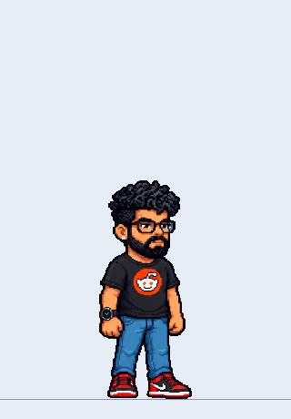
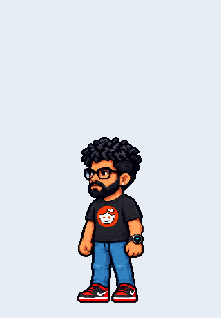

Arshad at 240px
Click/tap to move. Use ← → / A D to walk and change direction. Press Space / W / ↑ to jump. Change direction during a jump to turn in mid-air.
Native 240px standing height · scale 1.0 · shared palette. The turn is a sequence of pixel-art views that creates a 3D rotation effect. Controls work while this scene has focus. Escape or leaving the scene stops the action.

